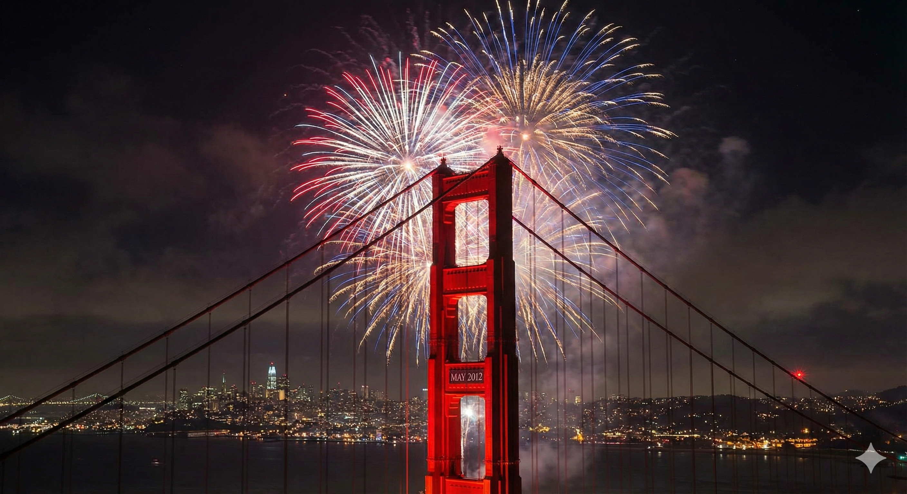
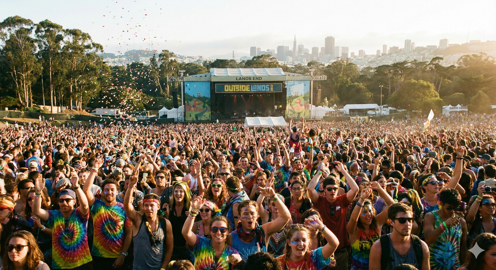
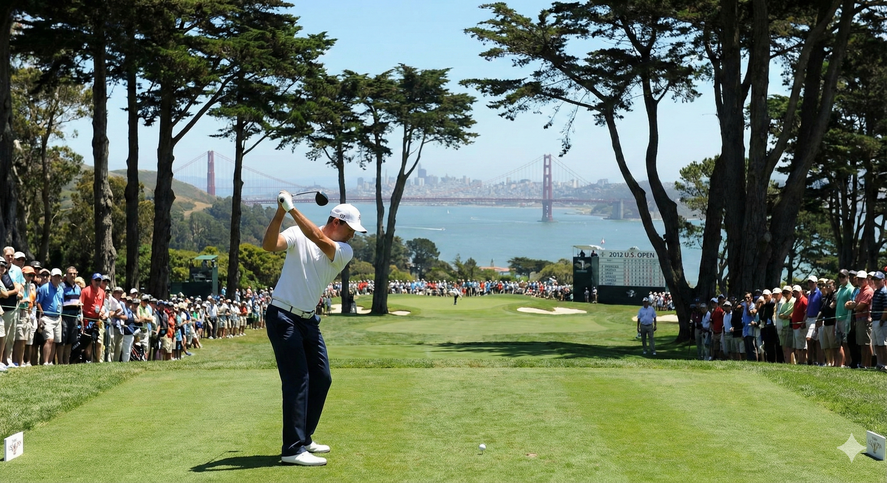
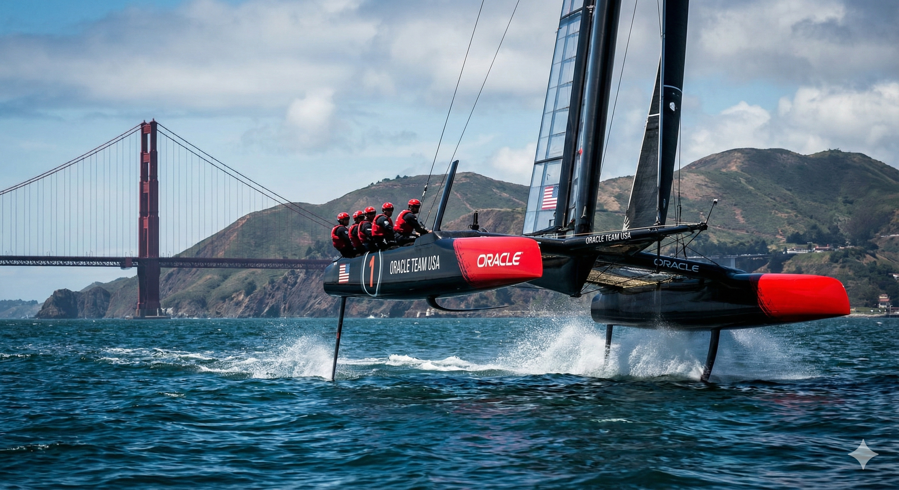
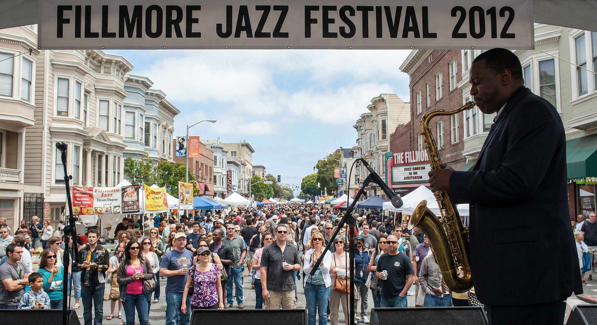
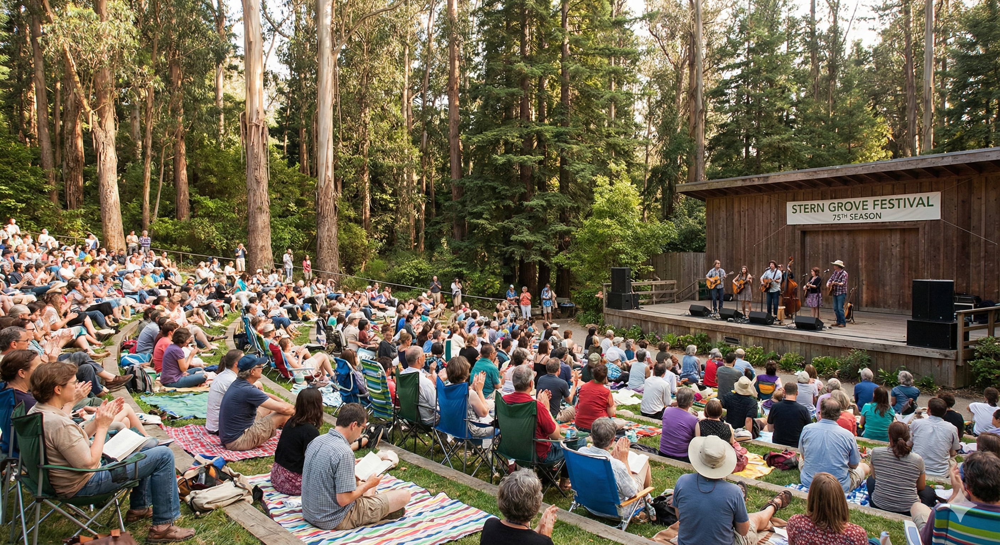
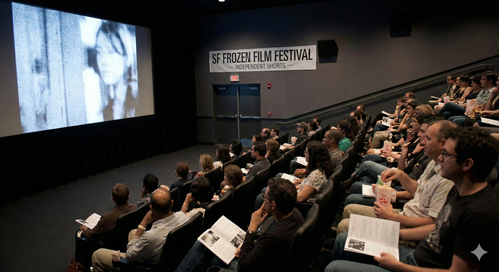
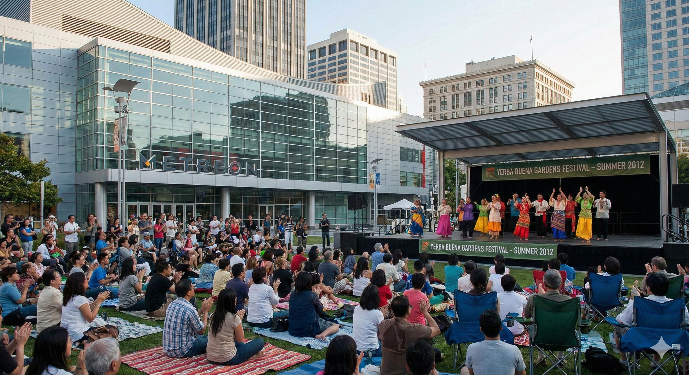
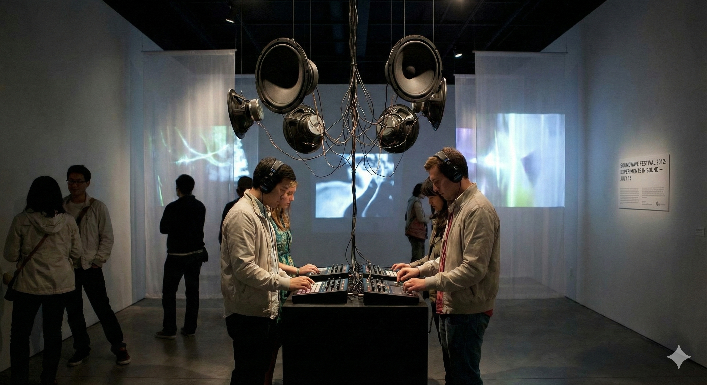

Summer 2012
A journey through the vibrant cultural scene, music festivals, and memorable moments that defined the San Francisco Bay Area during the summer of 2012.
Explore the key events that shaped the summer of 2012 in chronological order
A spectacular celebration marking 75 years since the Golden Gate Bridge opened on May 27, 1937. The anniversary event featured music, dancing, arts exhibitions, classic car and boat displays, and a breathtaking fireworks display from the bridge itself.
The prestigious U.S. Open Golf Championship was held at The Olympic Club in San Francisco, drawing golf enthusiasts and world-class players from around the globe to the Bay Area.
A beach bonfire and celebration at Ocean Beach to honor the longest day of the year, bringing together the community to celebrate the turning of the seasons.
The free performing arts series at Sigmund Stern Grove, featuring diverse musical performances every Sunday throughout the summer in the beautiful natural amphitheater setting.
An annual celebration of independent films and music, bringing together filmmakers and musicians from around the globe. Recognized as one of the "Top 25 Coolest Film Festivals" by MovieMaker Magazine.
A vibrant celebration of jazz music in San Francisco's historic Fillmore District, featuring local and international jazz artists performing in the heart of the city's jazz heritage.
San Francisco hosted America's Cup World Series races in August and October 2012, drawing over 150,000 spectators to the waterfront. These exhibition races were a prelude to the main America's Cup races scheduled for 2013.
A free festival featuring music, dance, theater, circus, and children's programs in the South of Market area, running throughout the summer and reflecting the rich cultural diversity of the Bay Area.
The San Francisco Recreation and Park Department hosted free outdoor Olympic viewing parties at Civic Center during the 2012 London Olympics (July 27 - August 12, 2012), featuring Olympic skills games, gourmet food, arts and crafts, and community activities.
The crown jewel of the summer - the fifth annual Outside Lands Music & Arts Festival in Golden Gate Park. One of the largest music festivals in the Bay Area, featuring legendary headliners and a diverse lineup of artists.
Featured Headliners:
A biennial sound, art, and music festival featuring diverse local and international multimedia artists working with sound, including experimental musicians, composers, and avant-garde performers across various venues throughout San Francisco.
Discover the most significant cultural and entertainment events of the summer

Spectacular celebration with fireworks, music, arts exhibitions, and classic displays marking 75 years of the iconic bridge.

Three days of music, food, and art in Golden Gate Park. Featuring Stevie Wonder, Metallica, and Neil Young.

Prestigious golf championship at The Olympic Club, drawing world-class players and enthusiasts.

Exhibition sailing races on San Francisco Bay drawing over 150,000 spectators to the waterfront.

Celebration of jazz heritage in the historic Fillmore District with local and international artists.

Free Sunday concerts in the beautiful natural amphitheater, featuring diverse musical genres.

Independent films and music festival, recognized as one of the coolest film festivals in the country.

Free performances featuring music, dance, theater, and children's programs in SoMa.

Biennial sound, art, and music festival featuring experimental and avant-garde multimedia artists.
Explore where the events took place across the San Francisco Bay Area
Historical weather data for San Francisco during the summer of 2012